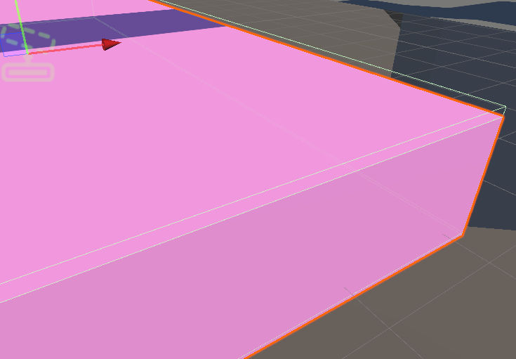

Intro
KRCC (Kinematic Rigidbody Character Controller)是一种给予动力学并含有刚体互动的角色控制。实现了以下功能
- 上下坡移动
- 台阶移动
- 沿墙移动时滑行
- 地面检测（贴合地面）
- 移动平台
- 可互动刚体交互
包含了以下组件:
Kinematic Rigidbody CC
KRCC 依赖 Rigidbody 以及 Capsule 组件, 并保持 Rigidbody 的 isKinematic 和 UseGravity 属性为 false.
KRCC 本身依靠 Collide and Slide 算法实现，其本质是在单位事件内进行多次位移来适应复杂的地形，在平滑移动和控制方面相对于单纯的 Rigidbody 拥有绝对的优势。 同时该组件集成了对于移动平台（MovingPlatform）的支持，模拟了真实的物理碰撞。
同时位移时考虑了 ContactOffset, 意味着可以像寻常物理组件一样执行碰撞检测。
面板属性
| 属性名称 | 描述 |
|---|---|
| Max Iterations | FixedUpdate 帧内最迭次数 |
| Max Step Height | 最大步进高度 |
| Max Slope Angle | 最大可攀爬坡度 |
| Energy Loss Factor | 碰撞时能量损失系数, 为0时损失最大 |
| Gravity | 默认重力，不会被自行调用，需要在操控脚本中自行调用计算 |
| Ground Layer | 地形检测 LayerMask |
| Interact Layer | 互动刚体 LayerMask |
 Moving Platform
Moving Platform
Moving Platform 依赖两个 BoxCollider 和 Rigidbody 组件运作。
一个碰撞箱用于碰撞，而另一个碰撞箱作为触发器将 KRCC 附加到该移动平台上进行移动，为保证安全， 触发器需要稍稍超出 需要站立的平面一些。
Rigidbody 需保持动力学状态，用来和其他动态刚体组件产生正确的交互。
